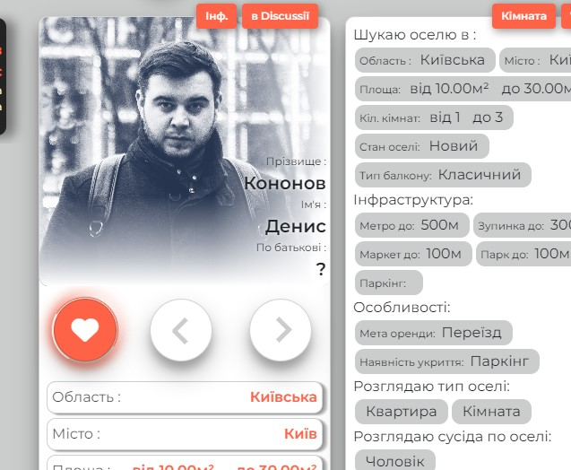
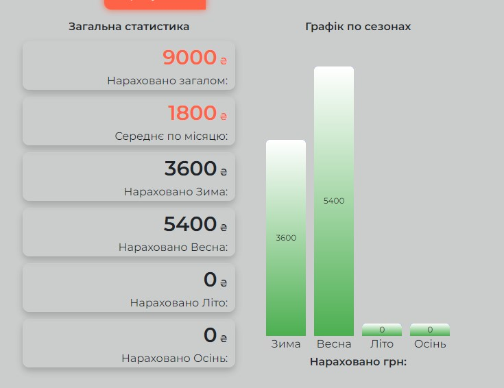
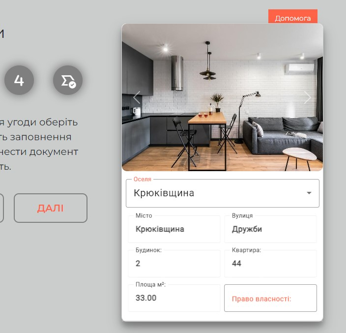
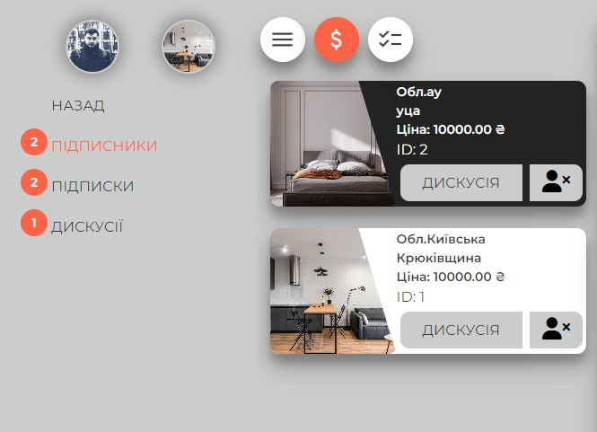

Вітаємо Вас в
Discussio Beta!
Тут ми розповімо про проєкт та наші плани.
Ми сподіваємось що реалізація нашої ідеї зможе допомогти облегшити питання пов'язані з організацією пошуку оселі, комунікацієї між орендодавцем та орендарем та питаннями які стосуються керування оселею. Наш проєкт явля'ється добровільною ініціативою і розрахований на допомогу людям, і наразі є цілком безкоштовний.

Discussio - це не лише пошук житла та орендарів

Discussio - це соціальна платформа
Discussio Beta - ми би хотіли протестувати декілька перших сценаріїв використання які доступні вже зараз з вашою допомогою.




Власник оселі
З точки зору власника, від створення аккаунту оселі до додавання орендара в мешканці.
- 1.Заповніть ваш профіль.
- 2.Створіть оселю, заповніть форми (місцерозташування, характеристики, особливості, додайте фото) та розмістіть оголошення.
- 3.Наповніть оселю об'єктами (меблі, техніка, предмети тощо).
- 4.Створіть комунальні послуги внесіть дані по витратам.
- 5.Перевірте правильність роботи пошуку орендара, застосовуйте фільтри.
- 6.Чекайте на підписки орендарів або самі знайдіть орендара, перейдіть до Дискусії.
- 7.Створіть чат з орендарем, поспілкуйтесь про умови угоди.
- 8.Створіть угоду та акт з орендарем.
- 9.Після заключення угоди додайте орендара в мешканці
- 10.Надайте орендару доступи до взаємодії з вашою оселею.
- 11.Залиште відгук про те що вам сподобалось або не сподобалось у вкладці відгук.
Орендар
З точки зору орендара, від створення аккаунту до додавання вас в мешканці.
- 1.Заповніть ваш профіль.
- 2.Заповніть профіль пасивного пошука та розмістіть оголошення.
- 3.Перевірте правильність роботи пошуку оселі, застосовуйте фільтри.
- 3.Чекайте на підписки орендодавців або самі знайдіть оселю, перейдіть до Дискусії.
- 4.Створіть чат з оселею, поспілкуйтесь про умови угоди.
- 5.Подивіться статистичні дані по комунальним оселі.
- 6.Чекайте запропоновану угоду від оселі.
- 7.Подивіться шаблон запропонованої угоди, збережіть його як pdf.
- 8.Після ухвалення деталей угоди попросіть додати вас до мешканців
- 9.Перегляньте доступи які можуть бути вам надані оселею
- 10.Попросіть власника надати вам доступи які ви би хотіли та перевірте їх.
- 11.Залиште відгук про те що вам сподобалось або не сподобалось у вкладці відгук.